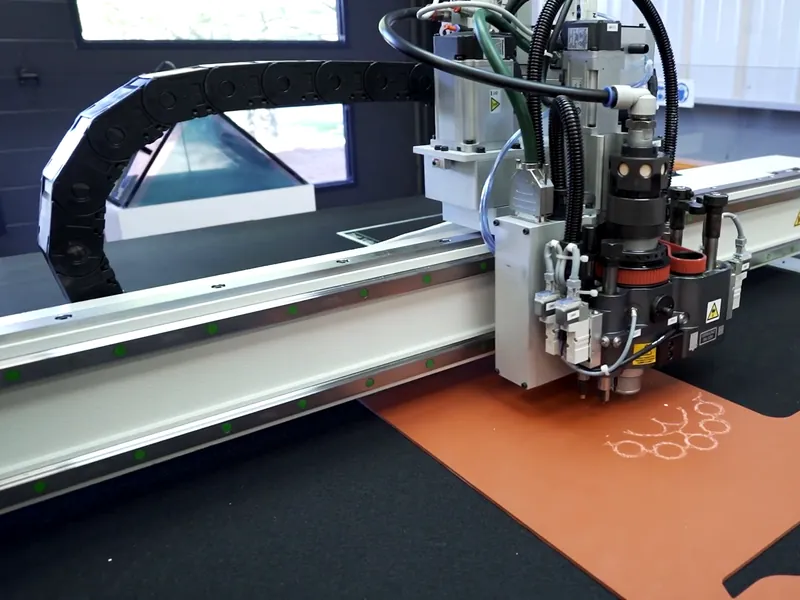
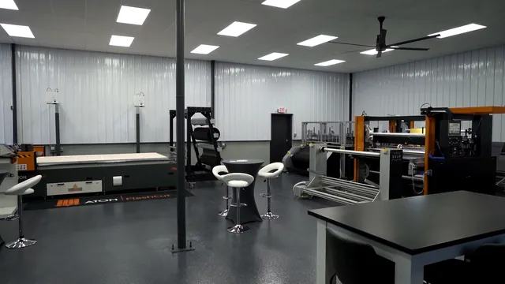
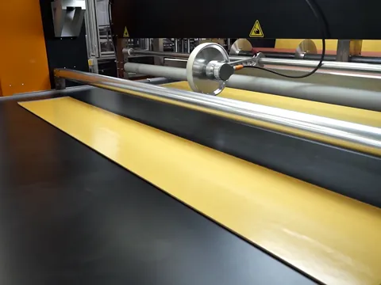
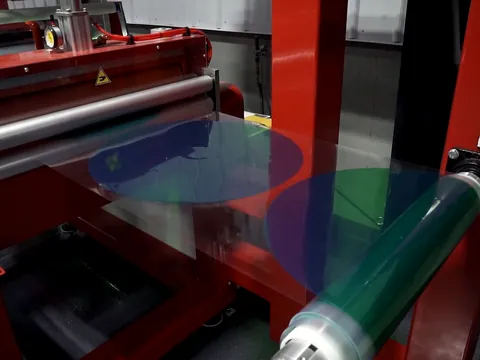
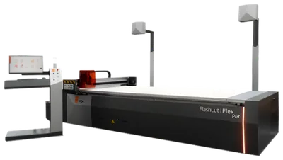
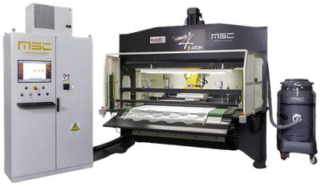
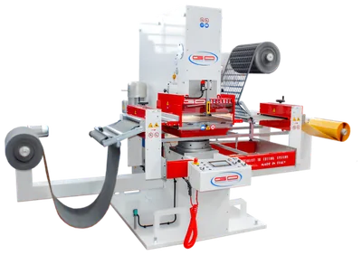
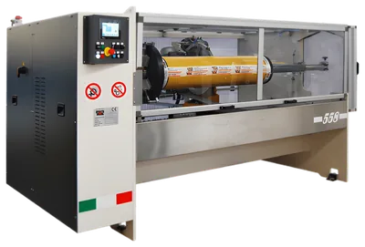
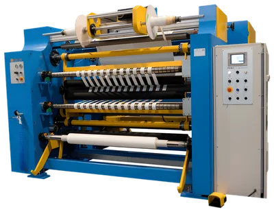
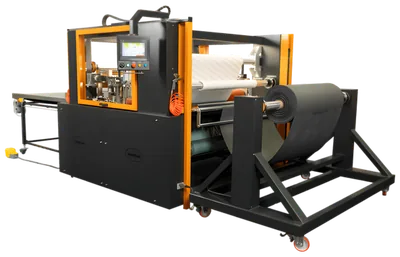

Cutting and converting machines, sold and serviced since 1907.
MSC brings in ATOM, Chiesa, RFS Co.Mec, Guidolin Girotto, FEBA, IMESA, Antares and International machines, and services them from Missouri and Ohio.

Open house in Earth City, November 10–12, 9 AM to 3 PM.See cutting and converting equipment in action and meet industry experts.
Email to reserve a spot


Stills from MSC’s own showroom video on mfgsup.com.
Six kinds of machine, one dealer to call
From a knife table for samples to a full slitting and laminating line, MSC handles the sale and the service in North America.
-

Digital knife cutting
ATOM FlashCut
Oscillating knife tables with one or two heads. No cutting dies to make, manage or store.
Cutting areas 1000 × 600 mm to 6100 × 2600 mm
-

Die cutting presses
ATOM, Chiesa and RFS Co.Mec
Chiesa built the first belt-fed die cutting press in the late 1980s and patented an all-electric CNC cutting press in 2006.
-

Kiss cutting presses
Guidolin Girotto
Flat-bed, rotary, laser and guillotine cutting for flexible material in rolls or sheets.
-

Automatic log slitting
FEBA and IMESA
Fully automatic lathe slitting, single and multi-shaft, for cutting rolls into narrow rolls.
-

Slitting and rewinding
FEBA, IMESA and Antares
FEBA has built converting machines near Varese, Italy, since 1968. MSC is its North American agent.
-

Laminating systems
IMESA and International
International engineers, builds and tests its lines in-house in Zlín, Czech Republic.
Fifty years with ATOM
MSC signed with ATOM of Vigevano, Italy, in 1974. In 2006 the two formed ATOM-MSC USA, so North American plants get ATOM directly, side by side with MSC.
ATOM started with cutting presses for the shoe district around Vigevano. Its FlashCut tables now cut gaskets, foam, rubber, composites and technical textiles.
“The beginning of our most important and longest-standing partnership, propelling MSC into new markets.”
ATOM FlashCut EASY
For sample rooms, labs and short to medium runs.
| Positioning tolerance | ±0.1 mm |
|---|---|
| Cutting speed | 80 m/min |
| Punching speed | 220 holes/min |
| Cutting head | 5 or 7 tools |
| Working areas | Two, independent |
Figures as published by MSC for the EASY series. Two working areas on 888, M25 and L30 models.
Built on shoes, now serving industry
MSC started in St. Louis selling to shoe and leather factories. When that trade declined in 1990, MSC turned to automotive, aerospace, medical and packaging, which today make up 90% of its business.
- Automotive
- Aerospace
- Medical
- Packaging
- Abrasives
- Composites and technical textiles
- Electronics
- Security and defense
- Oil and gas
- Footwear and leather goods
90% of MSC’s business today
A family business since 1907
Owned by the Goellner family since 1956, with offices in the St. Louis and Cincinnati areas.
1907
Founded in St. Louis
A small company serving the shoe and leather industries.
1956
The Goellner family takes over
Robert Goellner Sr. buys MSC from the Freeman family and widens the product range.
1974
The ATOM agreement
The start of MSC’s longest-standing partnership.
1990
A turn to industry
Steve Goellner Sr. refocuses MSC on automotive, aerospace, medical and packaging.
-
Show 2006 to 2024
1994–2024
New industrial partners
Guidolin, IMESA, FEBA, Chiesa and International join the line-up.
2006
ATOM-MSC USA
A joint venture with ATOM to serve North American industrial customers.
2024
Cincinnati showroom renovated
A new showroom for industrial machinery.
Talk to MSC about your material
Call the office nearest you or send an email. Tell them what you cut or convert and how much of it.
Service and parts
Call either office or email information@mfgsup.com for service. Operating manuals are in MSC’s online service center, and MSC also supplies cutting pads and boards, cutting belts and material handling.